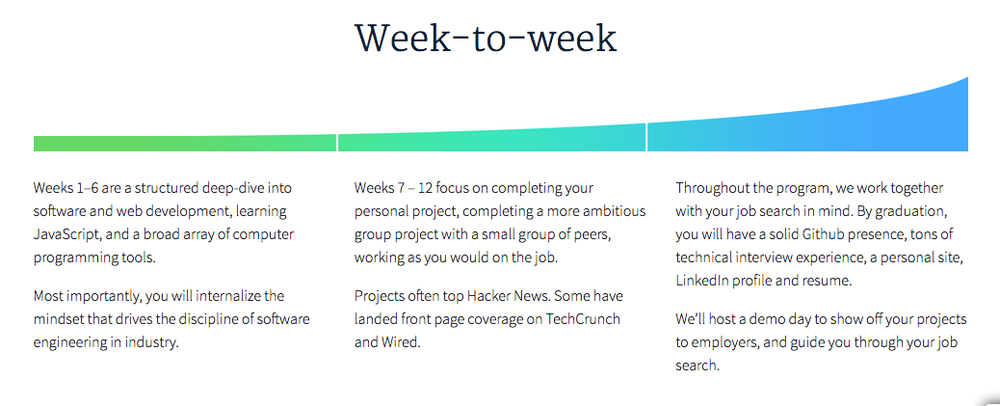
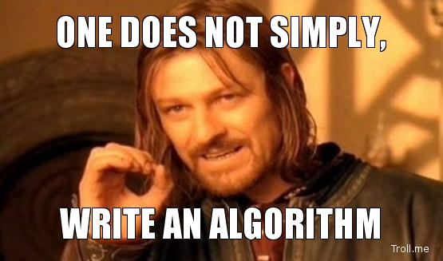

There comes a time in every developer's life when the realization that they can no longer put off taking their skills to the next level sinks in. For some, it comes at the very beginning of their journey into code, and for others it may come many years down the line.
For me, that day occurred earlier this year in March while sitting at a coffee shop in Brooklyn perusing over emails on a bright, cold, snowy morning.
I had opened up an email from JavaScript Weekly, one of my favorite JS resources for keeping up to date about the interwebs, and found a tiny link at the bottom advertising a coding school that focused on JavaScript in San Francisco...That was the instant I knew I had found my path.
After many months of studying and a thorough application process, I found out that I was accepted, and I began to put all of my energy into preparing for day one. That day is finally here.
Welcome to Hack Reactor
This has been a milestone that I have been looking forward to since hearing about the program way back in March, and I am beyond ecstatic to begin. Hack Reactor is a coding bootcamp that primarily focuses on all things JavaScript, and educating all those who dare to go through the grueling 12+ hour days, 6 days a week, for 13 weeks.

There are students that come from all sorts of backgrounds and levels of programming experience, (though you do need to have a decent handle on JS to apply), but it seems that Hack Reactor does a great job of finding people that are eager to learn and willing to go the distance to do so. I’m hoping my previous development experience on the front end building websites will help as we get into building out our applications, and I really am looking forward to getting a better handle on a lot of backend tools / databases as well. My personal goal is to feel comfortable wherever I find myself within the stack, so this is a task that I look to develop while studying at HR.
Blinded by (Computer) Science
We start off the week with a dive into the heart of computer science, including recursion, data structures, Big O notation (time complexity and space complexity of algorithms), data modeling and classes, inheritance patterns, and a scoped quest into the intricacies and details of JavaScript. The goal: to acquire meaning, intention, and drive to become wizards of the language, the full stack, and everything in between.

No longer will 'this' be just another misconstrued four letter word… Long gone are the days of pouring over the console distraught over the fact that none of the following statements are true...
> 0.1 + 0.2 === 0.3
< false
> NaN === NaN
< false
> isNaN(null)
< false
…and while many of these intricacies of JavaScript continue to mystify the natural minds of many a web developer, I will be doing everything I can to get one step closer to understanding what is the truth and what gets lost in interpretation. In order for me to truly succeed, I will need to not only understand all the right ways to accomplish something, but all the wrong ways as well. This for me is one of the most rewarding parts of the learning process.
The Path Ahead
I look forward to the challenges that lie ahead at Hack Reactor, and I can’t wait to meet the rest of my classmates and delve into this learning experience with everything I’ve got. I hope to be able to come out on the other end with a knowledge of the full stack, a great network of friends, and the ability to continue to learn well beyond this program is over. I’ll continue to post with my thoughts, experiences, and discoveries along the way, and perhaps you’ll be able to get something from my experiences as well. Let the hacking begin!